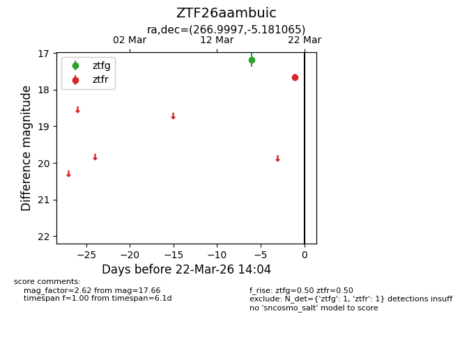
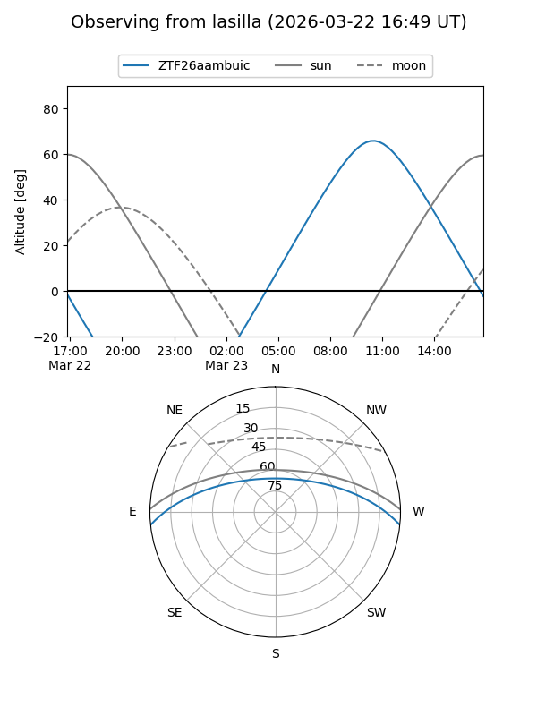
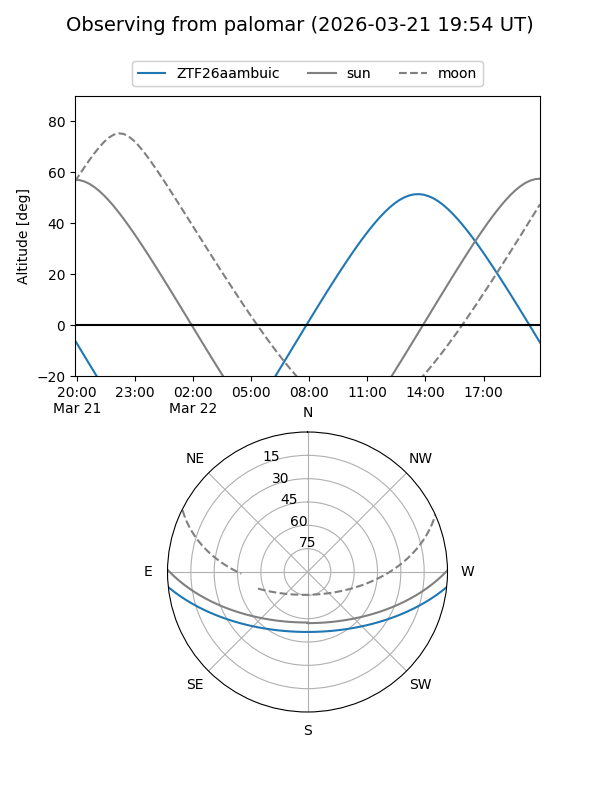

ZTF26aambuic
Target ZTF26aambuic at 2026-03-22 14:06
Aliases and brokers:
FINK: link
Lasair: link
ALeRCE: link
alt names
ZTF26aambuic (ztf,fink_ztf)
Coordinates:
equatorial (ra, dec) = 266.9997,-5.18106
equatorial (HMS+DMS) = 17:47:59.92,-05:10:51.83
galactic (l, b) = (20.8837,+11.59832)
Flags:
Photometry:
last ztfg=17.18, ztfr=17.66
1 ztfg, 1 ztfr detections
Lightcurve

Visibility


Additional plots